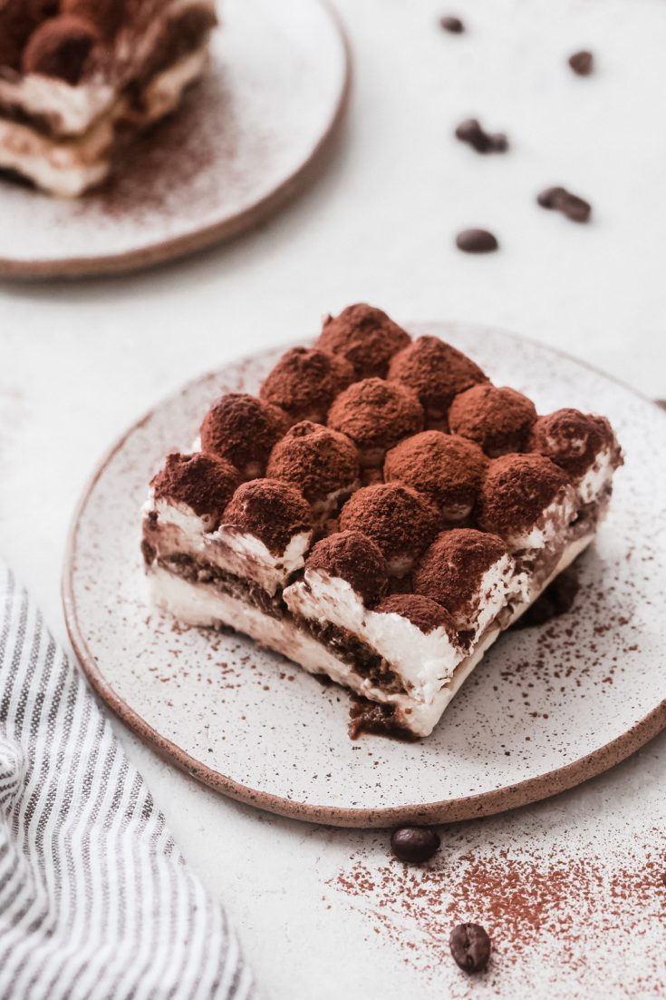

Tiramisu

Description
This delicious and unbelievably easy Tiramisu recipe is made with coffee soaked lady fingers, sweet and creamy mascarpone (no raw eggs!), and cocoa powder dusted on top.
It requires no baking and can be made in advance!
Ingredients
- Ladyfingers
- Mascarpone
- Coffee
- Heavy Whipped cream
- Granulated Sugar
- Vanilla extract
- Cocoa powder
Steps
- Mix creamy filling
- Mix espresso and liqueur (if using) in a bowl and dip lady fingers
- Layer mascarpone
- Repeat!